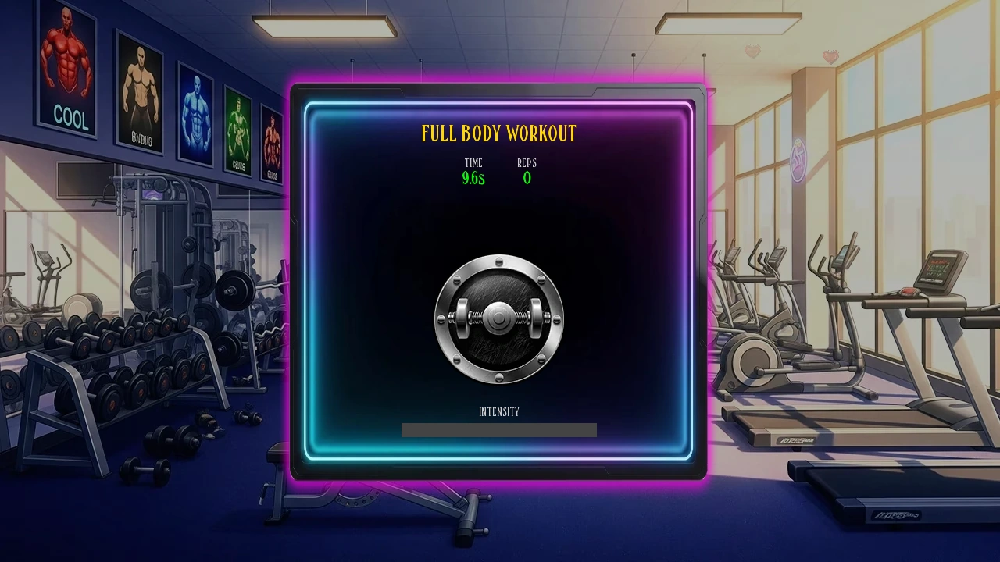
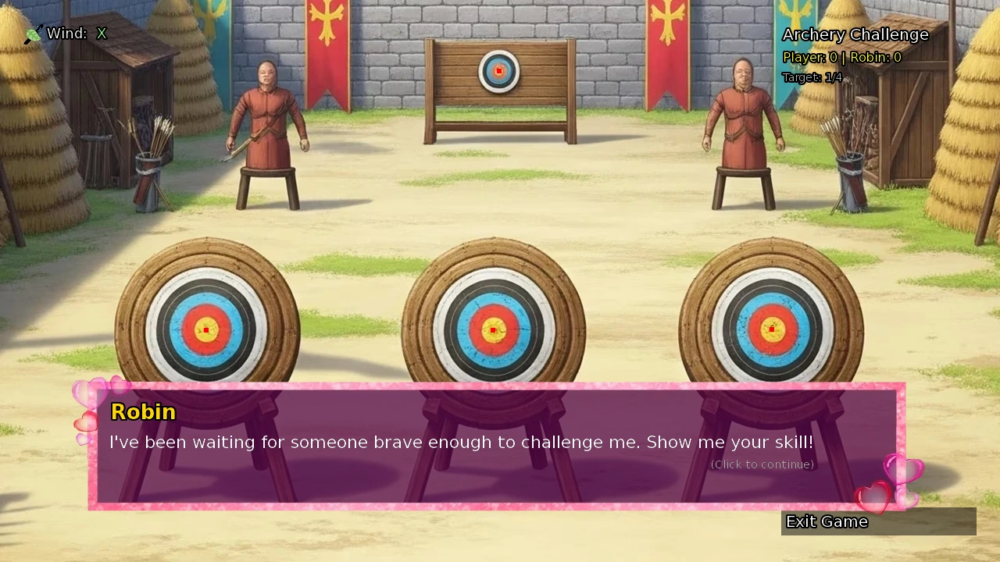
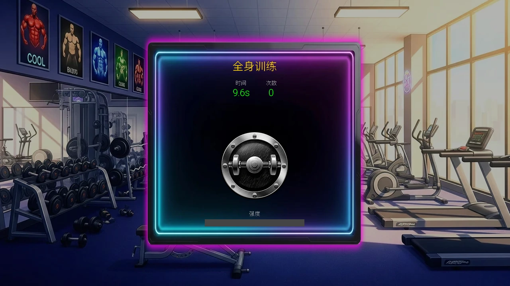
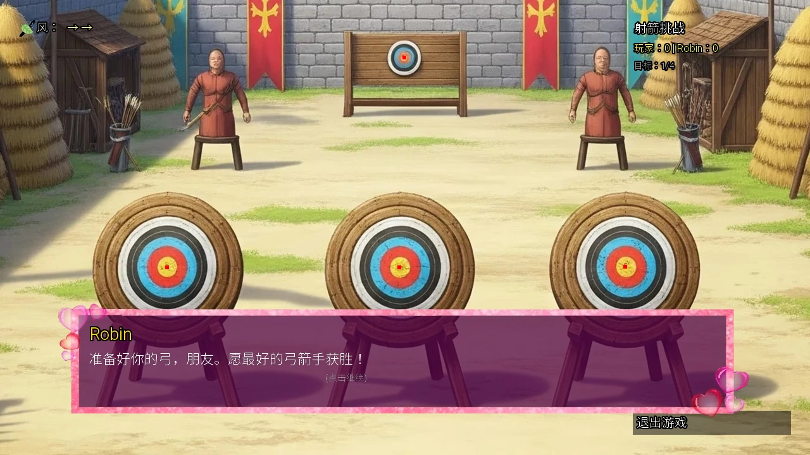

Select a screenshot to enlarge it. Screens show example inventories and progress.
Two different kinds of training challenge
Full Body Workout is a short clicking challenge with core-stat rewards. Challenge Robin is a four-target archery contest with affection rewards. They are separate from ordinary paid stat lessons and proficiency work.
Full Body Workout
Go to Present → Uptown → City Gym between 06:00 and 21:00 and choose Full Body Workout. Base cost: 120 game minutes, $30, 50 Energy and 30 Calm; the action also gives 1 Gym Clout. The on-screen challenge lasts 10 real seconds, which is different from its two-hour game-clock cost. Click the large weight button repeatedly until time ends.
| Repetitions in 10 seconds | Core-stat reward |
|---|---|
| 0–49 | Strength +1 |
| 50–99 | Strength +2 |
| 100+ | Strength +2 and Stamina +1 |
Complete the challenge to receive the stat reward. Entering already commits the fee and resource use; leaving the workout does not award its completion stats. The displayed action costs reflect applicable reductions. Personal Trainer work at the same gym is a paid career shift, not this workout.
With Time, the base game-clock cost becomes 60 minutes; Power changes 50 Energy to 25; Focus changes 30 Calm to 15. These effects do not change the 10 real-second clicking timer or its repetition thresholds.

Challenge Robin at the Archery Range
Visit Medieval → Kings Demesne → Archery Range between 09:00 and 18:00 and choose Challenge Robin. The action takes 30 game minutes and has no additional cash, Energy or Calm fee. The contest has four targets, with Robin and you each shooting once at every target. The arrow closest to that target’s centre wins it; an exact distance tie gives neither side a target win.
Let Robin’s turn finish, start your power meter, click to lock its level, then aim and click to release. Locking inside the highlighted power zone avoids vertical power error. Too little power makes the arrow land lower; too much makes it land higher. Watch the wind before the release and compensate horizontally.

What makes aiming easier
| Attribute / skill | Effect |
|---|---|
| Base Strength | Widens the power zone; its width is (4 + Strength÷3) before Archery Focus |
| Archery Focus | Power-zone width ×1.1 |
| Base Ability | Reduces aiming wobble; Ability 90+ removes this wobble |
| Quick Draw | Reduces the remaining wobble by 20% |
| Wind | A separate horizontal drift, still present after stat/skill improvements |
The power zone is centred at 67 on the 0–100 meter. A wider zone makes it easier to stop within the safe range; it does not remove wind. The normal Train Ability lesson and one-time Practice Archery action are separate training purchases, not extra shots inside a Robin contest.
Finish the match to collect its result
| Result | Base Robin affection |
|---|---|
| Win all four targets, 4–0 | 10 |
| Other overall win | 5 |
| Overall tie | 3 |
| Loss | 0 |
These are base affection amounts before normal relationship modifiers. Finish all four targets and leave through the result screen to receive the match reward. Quitting an unfinished contest does not grant it. Archery does not use the dance challenge’s 14,000-point goal.
两种不同的训练挑战
全身锻炼是按点击表现发放基础属性奖励的短小游戏；挑战Robin则是四个靶位的射箭比赛，奖励为好感。它们与普通付费属性课程、职业工作分别计算。
全身锻炼
在06:00–21:00前往现代 → 上城区 → 城市健身房，选择「全身锻炼」，进入标题为「全身训练」的小游戏。基础消耗为游戏时间120分钟、30财富、50精力与30镇定，行动另增加1健身房声望。画面挑战只持续现实时间10秒，与游戏时钟中的两小时消耗不同；在倒计时内反复点击大哑铃按钮即可。
| 10秒内的次数 | 基础属性奖励 |
|---|---|
| 0–49 | 力量+1 |
| 50–99 | 力量+2 |
| 100以上 | 力量+2、耐力+1 |
完成挑战才会取得属性奖励；进入时已支付费用和资源，提前离开不会得到完成奖励。实际减耗以行动显示为准。同一健身房的私人教练工作属于有工资的职业班次，不是这个训练。
时间效果可将基础耗时降为60个游戏分钟，力量药水将50精力降为25，专注将30镇定降为15。这些效果不会改变现实10秒的点击倒计时，也不改变次数对应的奖励档位。

在射箭场挑战Robin
在09:00–18:00前往中世纪 → 国王领地 → 射箭场，选择「挑战Robin」。每场耗游戏时间30分钟，没有另设财富、精力或镇定费用。共有四个靶位，每个靶位由Robin与你各射一箭；离该靶中心更近者赢下这一靶，距离完全相同时双方都不增加胜靶数。
等Robin完成回合，开启力量条，点击锁定力度，再瞄准并点击放箭。力度锁在高亮区内可避免垂直力度偏移；力度不足偏低、过大偏高。放箭前观察风向，在水平方向预留补偿。

哪些属性与技能有帮助
| 属性／技能 | 作用 |
|---|---|
| 基础力量 | 扩大力度安全区；弓术专注前，宽度为4＋力量÷3 |
| 弓术专注 | 力度区宽度×1.1 |
| 基础能力 | 降低准星晃动；能力90以上可消除这项晃动 |
| 快速拔枪 | 剩余晃动再减少20% |
| 风 | 独立的水平漂移；提高属性与技能后仍会生效 |
力度条范围为0–100，安全区以67为中心。安全区变宽，只是更容易停在合适范围，不会消除风。普通「训练能力」课程与一次性「练习射箭」是另外的训练行动，不会给当前Robin比赛额外增加箭数。
完成比赛后结算
| 结果 | Robin基础好感 |
|---|---|
| 四靶全胜，4–0 | 10 |
| 其他总比分获胜 | 5 |
| 总比分平局 | 3 |
| 落败 | 0 |
表中好感还会应用正常关系加成。完成四个靶位，再从结果画面退出，才会取得比赛奖励；中途退出不发这份奖励。射箭比赛不使用舞蹈挑战的14,000分目标。
CC BY-SA 4.0. Game images © Chronoromancer Studio.